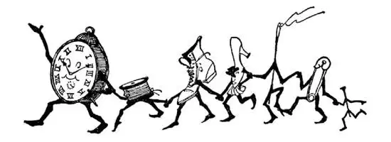

09
Yankee Land
扬基人的定居地

A PAIR of shoes, a hat, or an automobile we should not call “New” if they were a year old, but there is a corner of our country which is 300 years old and yet we call it “New.” About 300 years ago people from England, across the ocean, came to the northeast corner of the United States and made their homes there. So the six States north of New York, where they settled, we call New England. The Indians tried to call the white people “English,” but the best they could say was “Yenghees” or “Yankees,” just as a child in trying to say “brother” might say “buddy”—so the people of New England we still call “Yankees.” We could put all six States of New England in any one of several States out West; but though the New England States are small in size, they are big in many other things.
The largest and most important city of New England is Boston, named after a town in old England. Many people call Boston “the Hub,” by which they mean to say that the rest of the World turns round Boston, for the hub of a wheel you know is the center, around which the rest of the wheel turns. Of course, the World really turns around the North and South Poles and these Poles are the real hubs of the World; so people are only joking when they say the World turns round Boston.
Rocks and cold weather are bad for farming. New England in winter is very cold and it also is very rocky, so rocky that men make their fences of stones gathered off the fields. The cold and the rocks make it very hard to grow things there, but there are many, many waterfalls in New England, and waterfalls can be used to turn the wheels of factories to make things, so what people chiefly do in New England is to make things for the rest of the United States—thousands of different kinds of things—not big things such as railroad tracks and bridges that they make in Pittsburgh, but small things for a person’s use, such as needles and pins, watches and clocks, boots and shoes. If the wheels of the factories are turned by waterfalls they are called mills. Nowadays, most of the waterfalls are used to make electricity, and the electricity is used to run the machinery, but the factories are still called “mills.”
When-I-was-a-boy my idea of perfect happiness was to go barefoot. In some countries rich and poor alike go barefoot all the time, but in America almost every one wears shoes all the time. One of the chief things they make in these New England mills is shoes. In New England they make enough shoes for every pair of feet in the United States. Shoes wear out, so we can understand why the mills should keep on, year after year, making so many shoes. But in one of the States—the one with the Indian name, Connecticut—they make pins—enough for every man, woman and child in the United States to use 100 every year. What becomes of so many pins, do you suppose? They don’t wear out like shoes, and yet they disappear—billions of pins every year.

And clocks and thread and boots and shoes and needles and pins
有钟表、线团、靴子、鞋子、缝衣针和别针
And clocks and watches—they make millions of them too, though one clock or one watch should last a person a lifetime—little watches for the wrist and little clocks for mantelpieces and big clocks for clock towers.
And spools of thread—enough thread is made in one mill in a single day to wind round the World—that is, over twenty-five thousand miles of thread in one mill in one day!
Where do you spend your vacation ? Do you go to the seashore, to the mountains, or “down on a farm”? New England is the vacation land of many people from other parts of the country, because there are so many lakes, waterfalls, and beautiful spots for camps, streams for fishing, and in the Maine woods places for hunting deer and moose. In New Hampshire there are mountains called the White Mountains, and one of these White Mountains, named after our First President, is Mount Washington. It is the highest mountain in this part of the country, and just because it is so high many people like to climb it. Some people are like that. In Vermont, which means “green mountain,” there are the Green Mountains, not as high as the White Mountains, but very lovely. All along the New England coast are places where people go to spend the summer, because this part of the country is so cool while the rest of the country is so hot.
But the thing that New England is proudest of is its schools and colleges. In their mills they make Things , in their schools and colleges they make Men . Two of the most noted colleges in the country are in New England—Yale is in Connecticut and Harvard is in Massachusetts. Harvard is the oldest college in the United States.
Sticking out from Massachusetts like a long, bent finger, as if beckoning to people across the water to come to Massachusetts, is a piece of land called Cape Cod. It was named in honor of the codfish, because codfish are so plentiful in those waters, and they are caught and dried in great quantities and shipped everywhere.
The finger of Cape Cod has beckoned to people of other lands than England. People who speak strange languages have come to New England to work in factories and mills, so that now almost one quarter of the people in New England are not from England; they are not Yankees.
【中文阅读】
一双鞋、一顶帽子或一辆汽车，如果用了一年，我们就不该说它们是“新”的了，但是美国有一个角落已经有300年历史了，我们却仍然称它是“新”的。大约300年前，一群人从英国穿过大洋，来到了美国的东北角，在那里安家落户。因此，纽约北面他们安家的六个州被叫做“新英格兰”。印第安人把这些白人叫做英格兰人，但是他们尽了最大努力也只能发音为“英给”或者“扬基”，就像牙牙学语的孩子可能会把“哥哥”喊成“得得”一样——因此我们现在仍然把新英格兰地区的人叫做“扬基”。我们可以把新英格兰的六个州一起放到西部任何一个州里面；不过尽管新英格兰这些州面积小，在其他许多方面却很强大。
新英格兰最大、最重要的城市是波士顿，是以老英格兰一个镇子命名的。很多人把波士顿叫做“轮毂”，也就是说他们认为整个世界是绕着波士顿转动的；你知道轮毂就是车轮的中心，整个轮子都绕着轮毂转动。当然，世界实际上是围绕南北极而转的，南北两极才是世界真正的中心；所以人们说世界围着波士顿转不过是开玩笑而已。
如果一个地方天气寒冷，土地里有很多石头，肯定不适合种庄稼。新英格兰的冬天非常寒冷，土地里满是石头，当地人甚至用田里捡的石块建围墙，所以这个地区不适合种东西。但是当地有很多很多的瀑布，而瀑布可以让工厂的轮子转动起来，人们就可以制造各种产品。因此新英格兰人的主要工作就是为美国人生产东西——成千上万种不同的产品——不是像匹兹堡生产的铁轨或桥梁之类的大东西，而是个人日用的小东西，比如说缝衣针、别针、手表、钟、靴子和鞋子等等。如果工厂的机轮是由瀑布推动的，我们就把它叫做磨坊。现在大多数的瀑布都是用来发电，电又用于开动机器，但工 厂仍然被叫做“磨坊” [1] 。
我小的时候认为最快乐的事就是光着脚丫走路。在有些国家，不管是穷人还是富人，都终年光着脚走路，但在美国，几乎人人一年四季都穿着鞋。新英格兰的那些工厂里主要产品之一就是鞋子。当地生产的鞋子足以让美国人“人脚”一双。鞋子会穿坏，所以我们都知道为什么那些工厂年复一年不停地生产那么多的鞋子。但是在其中一个州——一个有着印第安名字的州，康涅狄格州——生产别针，每年都造出足够美国每一个男人、女人、孩子用上100枚的别针。你想过没有，这么多的别针都哪里去了呢？它们又不像鞋子那样会用坏，但是它们都不见了，丢失了。每年丢失的别针有几十亿枚呢。
他们还生产各种钟表，数量成千万，有戴在腕上的小手表，也有挂在壁炉架上的小钟，还有挂在钟塔上的大钟，各种品种，应有尽有——尽管一个钟或一块表一个人可用一辈子。
产品还有成卷成卷的线——一家工厂一天所生产的线能绕地球一周，也就是相当于两万五千英里！
你一般在哪里度假呢？去海滩，山上，还是下到农庄？新英格兰是个度假胜地，美国其他地区的很多人都到那儿去度假，因为那里有很多湖泊、瀑布，还有很多风景优美的景点可以野营，有可以钓鱼的小溪流，缅因州的森林里还有鹿和麋可以供人捕猎。在新罕布什尔州有一些山叫做怀特山脉，其中有一座山是以美国第一任总统命名的，叫“华盛顿山”。它是这一地区最高的山，正因为它很高，很多人都喜欢去爬这座山。有些人就是爱好登山。佛蒙特州的名字意思是“绿色的山”，佛蒙特州内有座格林山，还真是“绿色的山” [2] ，格林山不像怀特山脉那么高，但风景很美。新英格兰沿海地区是避暑胜地，因为当其他地区都很炎热的时候，这一地区却非常的凉爽。
但是新英格兰最引以为傲的是它的学校和大学。在工厂里，他们生产物品，在学校和大学里，他们培养人才。全美最知名的大学中有两所就在新英格兰——位于康涅狄格州的耶鲁大学和位于马萨诸塞州的哈佛大学。哈佛大学是美国最古老的大学。
马萨诸塞州沿海有块地方伸向海洋，像根长长的弯曲的手指，好像在 召唤人们越过海洋到马萨诸塞州来，那就是科德角半岛。因这里盛产鳕鱼而起的名字 [3] ，当地海域鳕鱼资源丰富，人们捕捞大量的鳕鱼，晒干后运往各地。
除了英国人以外，科德角还召唤其他地方的人。说着各种奇怪语言的人来到了新英格兰的工厂和作坊工作，因此现在几乎有四分之一的新英格兰人并不是来自英格兰，他们不是扬基人，也就是说不能算是“新英格兰人”。